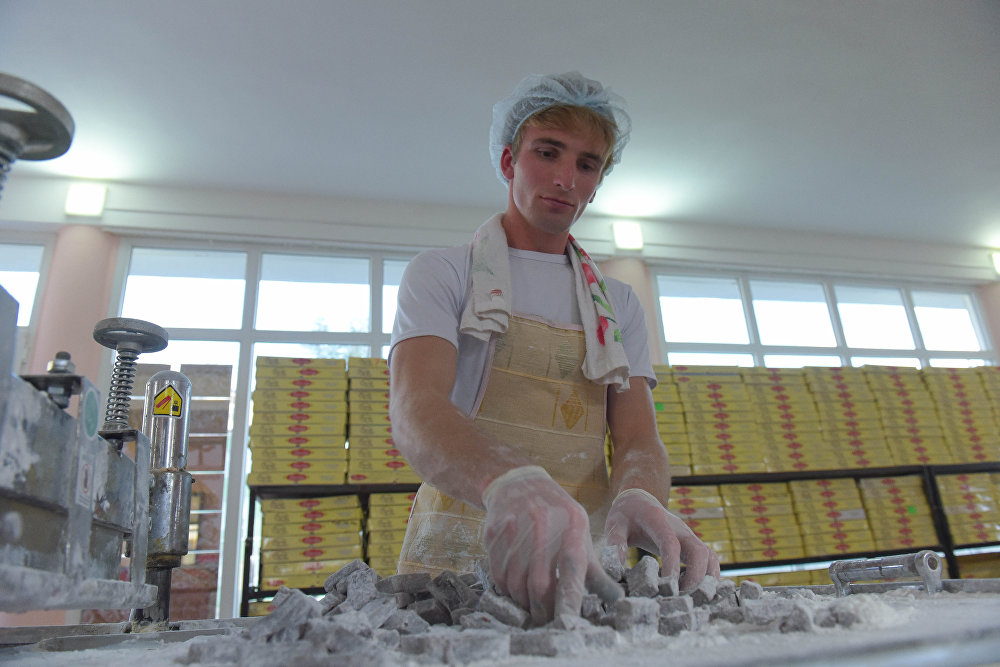

Наш опыт работы уже может получить паспорт гражданина РБ и требовать отмены усыновления!
Рахат-лукум производят в Болгарии, в Армении. Он представляет собой почти несладкие (но обвалянные в сахарной пудре) полупрозрачные бесформенные кусочки крахмалистого вида, мягко упругие по консистенции и с едва уловимым ароматом роз.

C нашими поставщиками работают даже правоохранительные органы!